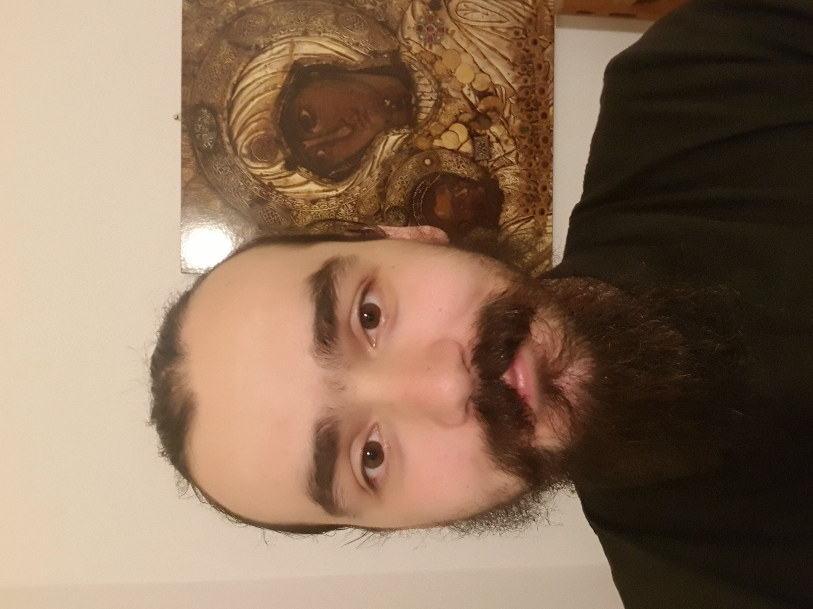

|  |
Leonard PopUp until now I was a brother at the Oasa Holy Monestery working at the animal farm. I was milking the cows of the Monastery and cleaning the milking containers three times a day. |
2023-now I am taking a Udemy Web Developer Course taught by Angela Yu
2021-2023 I was working as a volunteer at The Holy Monastery Oasa doing animal farm work and other monastic chores including beeing a librarian, which helped me a lot to understand how to become a more reliable, and skilled person
2019-2021 I went to England where I had aquired experience as a Teaching Assistant working with special needs children Also I had a 6 months experience at Imperial Colledge London University as a Central Administrator, Faculty of Nature Science
2013-2019 I had studyed at the University of Oradea until 2019 when I received my diploma licented in Pastoral Orthodox Theology. While I was studying I also aquired experience in numerous fields of interest as voluntary and community involvement
2009-2013 After that I have studyed at Ioan Slavici National Colledge. Having Math,Informatics and English as primary courses 2009-2012 and received my bachelaurs degree 2013
2001-2008 I have attended Grigore Moisil Gymnasium
| Dates | Work |
|---|---|
| 2020-2021 | Imperial College London University, Central for Environmental Policy Department, Faculty of Nature Science - Central Administrator |
| 2019-2020 | Uniform Education London - Teaching Assistant |
| 2018-2019 | Auchan Satu Mare - Operator |
| 2016-2017 | Plexus Oradea - Manufacturing Operator |
| 2011-2019 | AMD Christian Orthodox Charity ONG from Satu Mare - Volunteer |
|
|